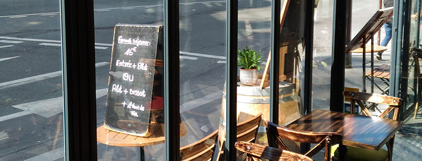
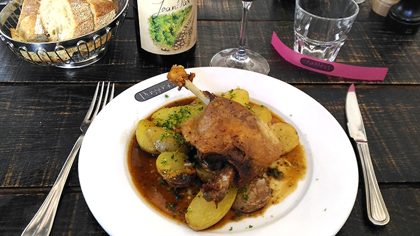

Mâchon Mag

L'accident de cuisine qui a frappé Les Colonnes à Issy les Moulineaux fut d’une telle violence qu’il projeta les Francs Mâchons attendus dans ce bistro isséen jusque dans les fossés St Bernard, tout près du site de l’ancienne Halle aux vins et du grand gisement d’amiante de Jussieu.
Mais, par Bacchus, notre Secrétaire Général, qui a plus d’un bistrot dans sa manche, nous a sorti de l’autre manche, car il n’est pas manchot, un plan B (B pour Bectance) ; en 48 heures et un coup de fil à Jean-Luc Martin, l’homme qui fait main basse sur le quartier de la Maub puisqu’il y possède déjà La Petite Périgourdine et l’Authre bistro (non, ce n’est pas une faute d’aurthograf, l’Authre est une rivière du Cantal, comme le patron) nous ouvrit les portes du Passage, troisième fleuron de son empire, là où convergent les rues des Fossés St Bernard, du Cardinal Lemoine, des Ecoles et Jussieu. Ces deux là sortent de chez Arnys Le Passage est bien mal nommé car on y sert une cuisine fort sage et, comme l’a fait remarquer notre Président, lorsque l’on y est à table, on y reste.
L’accueil était charmant et délicieusement féminin avec juste cette dose de féminité pour réveiller la libido des mâles Francs Mâchons en mal de grâce aux aurores et qui n’ont pas hésité à se priver de grasse mat pour être fidèles à leurs agapes du jeudi. Donc, derrière le comptoir, la grâce, devant, des gras, des bedonnants mais aussi quelques modèles plus réduits. Le Chardonnay de Bourgogne que nous servent Laetitia et Sylviane a de beaux reflets dans les verres en cette matinée ensoleillée. Il est en accord parfait avec un bel assortiment de charcuteries... saucisses, saucissons, viande séchée et une terrine de bœuf-carotte inspirée de la cantine de la police des polices du Quai des orfèvres ; les carottes ne semblent pas avoir fait un effet bœuf, il en est resté suffisamment dans les assiettes pour faire un bœuf mode !
À l’heure statutaire, 9h30, notre Président nouvellement élu appelle ses commensaux à passer à table. Avant le premier coup de fourchette, dans son style inimitable, il nous souhaite la bienvenue et demande aux invités de se lever. Ce sont deux hydrophobes, il y a là Marcel Doyen, Grand Maître de la Confrérie du Clos de Clamart, présenté par notre ami Gérard Maurice et Laurent Michot, Membre de la Confrérie des Entonneurs Rabelaisiens de Chinon et de la Confrérie des Chevaliers du Tastevin du Clos de Vougeot, recruté par notre Vice-Président, André, lors d’un stage de récupération de points du permis de conduire. Les canards rescapés de l’abattage et de l’équarrissage, qu’on fit venir du sud-ouest mais qui furent confits ̋maison, sont accompagnés de petites pommes de terre rissolées, persillées et aillées (personnellement j’aurais peut-être réveillé le tout avec une pointe de piment d’Espelette ou de poivre de Sichuan). Notre hôte qui ne souhaitait pas faire la Une du Canard enchaîné s’il nous avait servi du palmipède grippé applique le principe de précaution et nous prescrit le seul antidote efficace au virus H5N8, un excellent Côtes du Rhône Villages élaboré par ses soins, selon les principes de la bio-dynamie, sur le Domaine Duseigneur (un joli nom pour des vignes).

Lorsque l’on sait que le maître de maison est originaire d’Aurillac et que l’heure du fromage est venue, il n’est pas question de faire l’impasse sur un beau morceau de Cantal ! Pour satisfaire tous les goûts, le Cantal est flanqué de lichettes d’un excellent Camembert de la maison Cantin. C’est l’heure pour notre Président de faire l’éloge, avec truculence, du Chef et de son équipe et du menu. Un petit café, un dernier verre au comptoir et ce sont les au-revoir, sans cigare, puisque notre torcedor préféré devait être en train de peaufiner son planté de bâton dans les Alpes.